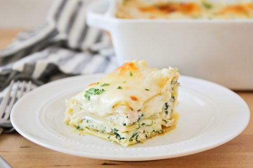

White Cheese Chicken Lasagna

Description
Chicken lasagna with spinach and a creamy white cheese sauce. Great for any kind of potluck. My kids love it!
This white chicken lasagna recipe is a satisfying and crowd-pleasing twist on a classic Italian favorite.
Ingredients
9 lasagna noodles
1 onion, chopped
1 clove garlic, minced
1/2 cup AP flour
2 cups chicken stock
1 1/2 cups milk
1 tsp salt
4 cups mozzarella cheese
1 cup grated Parmesan cheese
1 tsp basil, chiffonade
1 tsp oregano, chopped
1/2 tsp black pepper
2 cups ricotta cheese
2 cups chicken, cubed
20 oz frozen chopped spinach
1 tbsp parsley, chopped
1/2 cup butter
Directions
- Preheat the oven to 350 degrees F (175 degrees C).
- Bring a large pot of lightly salted water to a boil. Add lasagna noodles and cook for 8 to 10 minutes or until al dente; drain and rinse with cold water.
- Meanwhile, melt butter in a large saucepan over medium heat; stir in onion and garlic. Whisk in flour until lightly browned and onion is tender, about 2 minutes. Add chicken broth, milk, and salt; cook, whisking continuously, for 1 minute.
- Stir in 2 cups mozzarella and 1/4 cup Parmesan until well combined. Season with basil, oregano, and black pepper; remove from heat and set aside.
- Spread 1/3 of the sauce mixture in the bottom of a 9x13-inch baking dish. Layer with 3 lasagna noodles, ricotta, and chicken. Arrange 3 lasagna noodles over the chicken and layer with 1/3 of the sauce mixture, spinach, remaining 2 cups mozzarella, and 1/2 cup Parmesan. Arrange remaining noodles over cheese and spread remaining sauce evenly over noodles. Sprinkle with parsley and remaining 1/4 cup Parmesan.
- Bake in the preheated oven for 35 to 40 minutes.